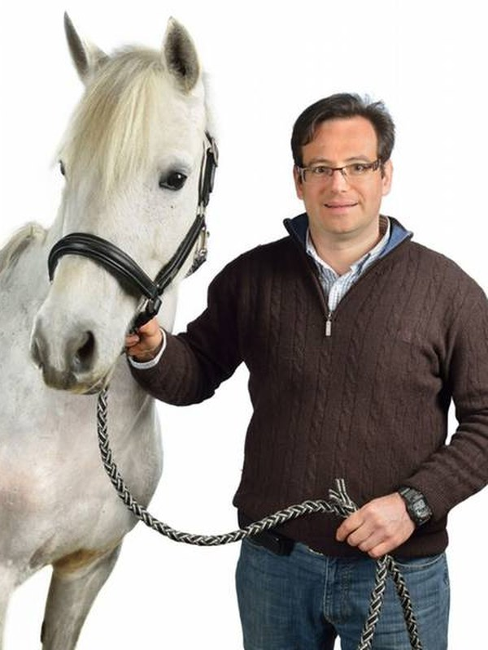

Vakdierenarts
Kristof Hanssens
Kristof studeerde in 1999 af als dierenarts, optie paard, aan de Universiteit Gent. Na stages en werkervaring in paardenklinieken in binnen- en buitenland bouwde hij het paardencliënteel van Animedi verder uit. In 2009 rondde hij met succes de opleiding Vakdierenarts paard af.